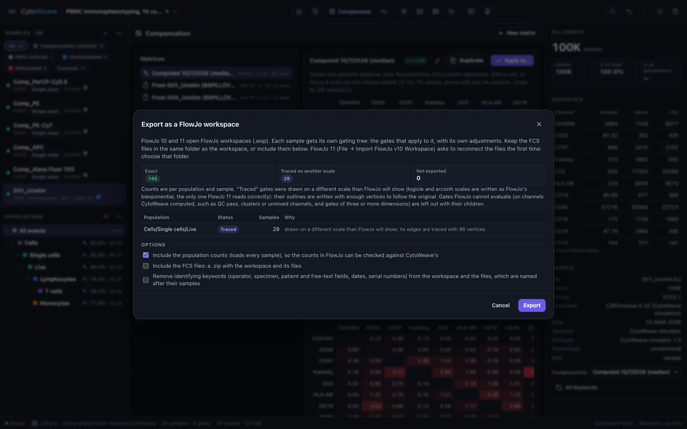
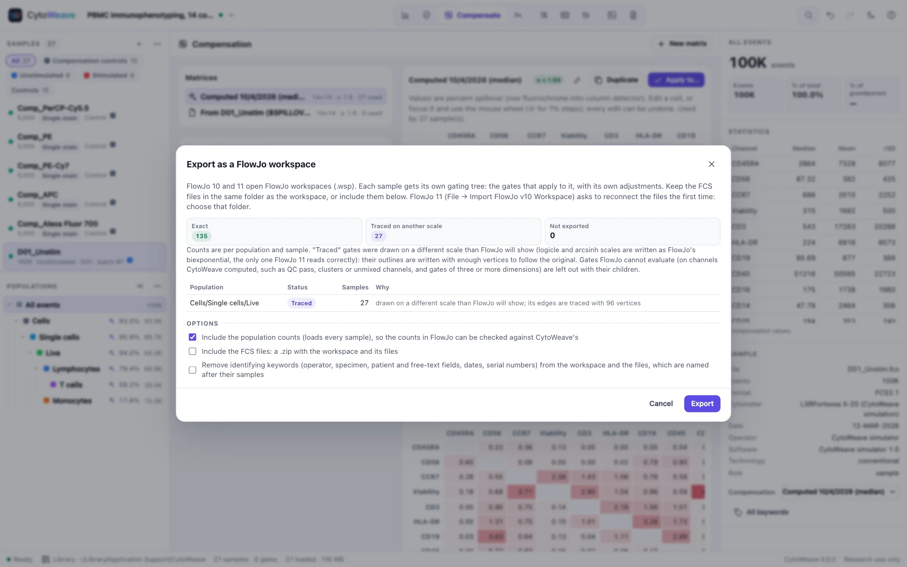

FlowJo and Gating-ML
Bring an analysis over from FlowJo and see, population by population, that it gives the same counts; send one back to FlowJo; exchange gates with other tools through Gating-ML.
Importing a FlowJo workspace
CytoWeave reads FlowJo 10 workspaces (.wsp, also written by FlowJo 11): their samples, gates, compensation matrices and scales. FlowJo 9 workspaces and FlowJo 11's .flowjo format are not read; export .wsp from FlowJo.
- Open the
.wspfile: drop it on the window, or use Import a FlowJo workspace or Gating-ML… in the sample list's + menu. - The import dialog lists every population as exact, approximated or not imported, and says why: a curly quadrant, for example, imports with straight dividers. Gates FlowJo drew on uncompensated data keep uncompensated values, time and linear axes with a gain are converted from FlowJo's units, and ellipses are read from FlowJo's display space.
- Match the FCS files: CytoWeave finds the workspace's files among the samples already open; Add the FCS files… or Add a folder… adds the rest.
- Choose the Options:
- Axis scales: use FlowJo's scales, only for channels without one, or keep the current scales. Each gate keeps the scale it was drawn on either way; this only sets how plots draw the axes.
- Apply FlowJo's compensation to the matched samples.
- Then load the matched samples and compare every population count with FlowJo's.
- Click Import (or Import gates only when no FCS file is matched).
The Moving from FlowJo example opens straight into this dialog, with the FlowJo 10 workspace made for its four samples.
The migration report


After an import with the comparison, the FlowJo migration report recomputes every imported population from the FCS data and lists, for each population and sample, FlowJo's count, CytoWeave's count, the difference, a status (exact, within 1%, differs or not compared) and the likely cause of a difference. Show opens that population on that sample; Export CSV saves the table for your records; Recompute runs the comparison again. The report stays available from the workspace menu.
Small differences are expected. FlowJo evaluates gates at its display resolution, which moves events near gate boundaries: typically well under 1% of a large population, more for populations of a few dozen events. CytoWeave evaluates gates exactly. Larger differences usually mean different compensation, a different FCS file, or a population whose parent already differs.
FlowJo's biexponential scale is reproduced exactly, from FlowJo's own table algorithm, and checked against BD's published lookup tables. On FlowJo's own test workspaces CytoWeave reproduces the counts FlowJo saved; on real workspaces it matches them exactly at least as often as FlowKit does, and within 0.1–0.3% for large populations.
Limits. Curly quadrants import with straight dividers. Template group gates import as per-sample copies, merged where samples agree.
Exporting to FlowJo


To hand an analysis to a FlowJo user, or to keep a copy in FlowJo's format, choose Workspace → Export → FlowJo workspace (.wsp)…. CytoWeave writes a FlowJo 10 workspace, which FlowJo 11 also opens:
- One gating tree per sample, as FlowJo keeps them: the gates that apply to that sample, with its own adjustments, and gates limited to a group only in that group's samples.
- Each sample's compensation, the scales of its channels, and the workspace's sample groups.
- Optionally, CytoWeave's count of every population, so the counts FlowJo shows can be checked against CytoWeave's.
- Optionally, the FCS files, in a ZIP with the workspace, and optionally de-identified.
Before exporting, the dialog lists every population as one of:
| Status | Meaning |
|---|---|
| Exact | FlowJo evaluates the same gate. Rectangles, ranges, quadrants and splits are always exact; polygons and ellipses are when they were drawn on the scale written for their channels. |
| Traced | A polygon or ellipse drawn on another scale than the one written. FlowJo draws gate edges straight on its own axes, so the outline is written with enough vertices to follow the original. |
| Not exported | Gates FlowJo cannot evaluate: category gates (QC pass, barcodes, clusters), gates on channels CytoWeave computed (unmixed, normalized, ratios), and gates of three or more dimensions. Their children are left out too. |
The export is checked in the validation suite: the bundled example, ten FlowKit test workspaces and a workspace built in CytoWeave (with splits, quadrants on mixed scales, Boolean populations, per-sample adjustments and group scopes) each import back with every count unchanged, and FlowKit reads every export and counts what CytoWeave counts. The exports have not yet been opened in FlowJo itself; if you try one, please report how it went.
Gating-ML 2.0
Gating-ML is ISAC's standard for gates, transformations and compensation. Open a Gating-ML .xml file like any other file, and export with Workspace → Export → Gates as Gating-ML 2.0. Import and export cover:
- rectangle, polygon, ellipsoid, quadrant and Boolean gates, including gates of three or more dimensions (evaluated in all of them, though a plot shows two);
- the flin, flog, fasinh, logicle, hyperlog and ratio transformations, with their bounds;
- spectrum matrices, including spectral unmixing matrices, and the compensation each gate dimension names.
All 190 gates of ISAC's Gating-ML 2.0 compliance suite select exactly the expected events. Re-importing a CytoWeave export restores names, colours and scales exactly. Gating-ML has no biexponential, so biexponential axes are written as their closest logicle, with the gate coordinates converted; the export warns when it does this.
Classification results (CLR)
Population memberships (CLR)… exports, for every event of a sample, a column per population or cluster saying whether the event belongs to it, for tools that read memberships. Choose the populations and the column names (population names, or paths when names repeat).